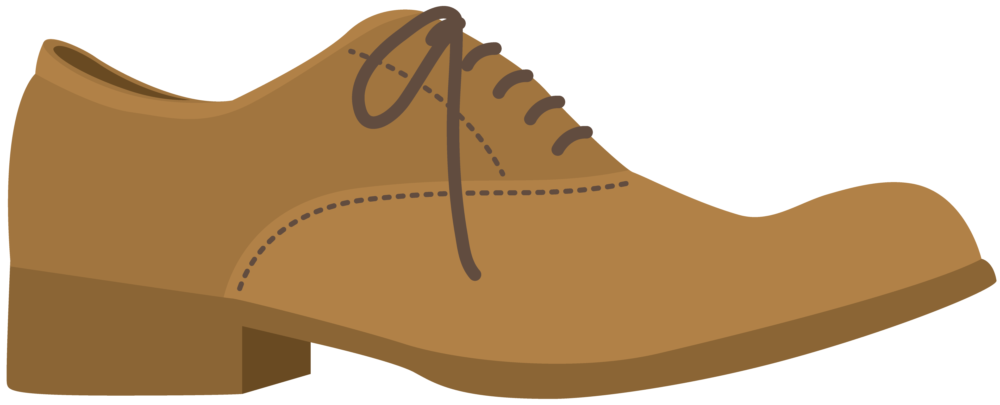

ストレートチップ
爪先に一直線の切り替えが入るデザイン。最もフォーマル度が高く、冠婚葬祭にも対応します。
革靴ノート
Leather Shoes Guide
一足を長く、深く楽しむための最初の一歩。
部位の名前から製法、デザイン、革の違い、お手入れまでを一冊にまとめました。
01
まずは基本の呼び名から。図と合わせて覚えておくと、お店での説明もぐっと理解しやすくなります。

靴底を除いた甲革全体の総称。ヴァンプとクォーターを合わせた部分を指します。
爪先からひも穴あたりまでの前方部分。「腰革」に対して「先革」とも呼ばれます。
ヴァンプの後方、かかとから側面にかけての部分。靴全体の立体感を決めます。
靴底のこと。製法によって重ねる枚数や素材、耐久性が大きく変わります。
ソール後方の積み上げ部分。歩行時の衝撃を吸収し、姿勢を支えます。
ひもの下に位置する舌のような革。足の甲を保護し、フィット感を調整します。
02
同じデザインに見えても、ソールの縫い方(製法)が違うだけで耐久性も履き心地も価格帯も変わります。代表的な3つの製法を比較します。
| 項目 | グッドイヤーウェルト製法 | マッケイ製法 | セメンテッド製法 |
|---|---|---|---|
| 特徴 | ウェルトを介してアッパーとソールを縫う、二重構造の伝統的な製法 | アッパーとソールを直接一本の糸で縫い付ける製法 | アッパーとソールを接着剤で貼り合わせる製法 |
| 耐久性 | 高い。ソールの張り替えを繰り返し長く履ける | 中程度。修理は可能だが構造上限界がある | やや低め。ソールが剥がれると修理が難しい |
| 履き心地 | やや硬め。履き込むほど足になじむ | 軽く、しなやかで足馴染みが早い | 軽量でクッション性が高いものが多い |
| 価格帯 | 高価格帯になりやすい | 中価格帯が中心 | 手頃な価格帯が中心 |
03
爪先の形や飾りの違いで印象が大きく変わります。フォーマル度の目安も合わせて紹介します。
爪先に一直線の切り替えが入るデザイン。最もフォーマル度が高く、冠婚葬祭にも対応します。
装飾のないシンプルな爪先。ビジネスからカジュアルまで幅広く合わせやすい万能デザイン。
W字型の切り替えと穴飾り(メダリオン)が特徴。華やかで、カジュアルダウンもしやすい一足。
爪先にU字のステッチが入るモカシン系デザイン。カジュアルシーンで人気の型。
ひもを使わないスリッポンタイプ。着脱しやすく、きれいめカジュアルの定番。
ひもの代わりにベルトとバックルで留めるデザイン。フォーマルとカジュアルの中間に位置します。
04
同じ「革靴」でも、使われている革によって表情や手入れ方法が変わります。代表的な素材を紹介します。
生後間もない仔牛の革。キメが細かく滑らかで、革靴の中でも高級素材として定番。
馬のお尻部分から採れる希少な革。緻密で独特の光沢があり、耐久性にも優れます。
革の裏側を起毛させた素材。柔らかな質感が魅力だが水や汚れにやや弱い一面も。
仔牛より成長した若牛の革。カーフより丈夫で、価格と耐久性のバランスが良い素材。
牛革などにワニ革や爬虫類革などの型を圧着した革。個性的な表情を手頃に楽しめます。
05
特別な道具がなくても、この流れを覚えておくだけで革靴の寿命は大きく変わります。
表面のほこりや土埃を軽く払います。細かい部分は縫い目に沿ってブラッシング。
布にクリーナーを取り、古いクリームや汚れを丁寧に拭き取ります。
少量のクリームを薄く均一に塗り込み、革に栄養と油分を補給します。
クリームがなじむまでしばらく置き、風通しの良い場所で乾かします。
余分なクリームを取り除きながら、革全体になじませて艶を引き出します。
柔らかい布で優しく磨き上げれば完了。定期的な手入れが長持ちの秘訣です。